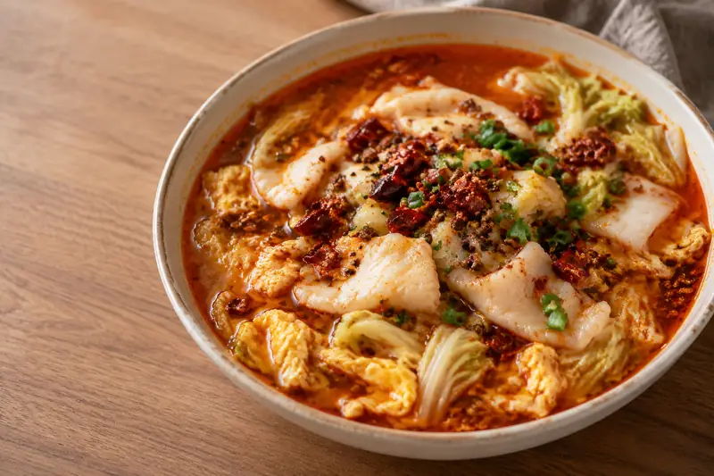

Main主菜 · Sichuan川
Sichuan Boiled Fish in Chilli Oil水煮鱼片
A Sichuan restaurant signature you can make with tilapia fillets. Velveted fish slices poach in a spicy broth until silky; the final ladle of smoking oil over chillies and Sichuan pepper is the whole point. The tricks are slices that stay whole and oil that is truly hot.川菜馆的招牌，在家用罗非鱼柳就能做。鱼片上浆后在辣汤里烫熟，嫩得像豆花；最后一勺热油浇在花椒干辣椒上，「刺啦」一声是这道菜的灵魂。难点在鱼片要嫩不要碎、热油要够烫。

Ingredients食材
- Tilapia fillet罗非鱼 600 g · about 600 g tilapia fillets, sliced on the bias 5 mm thick罗非鱼柳约 600 克，斜刀片成 5 毫米厚的片 easiest to slice half-thawed半解冻时最好片
- Eggs鸡蛋 33 g · 1 egg white1 个蛋清
- Cornstarch玉米淀粉 9 g · 1 tbsp1 汤匙
- Shaoxing wine料酒(绍兴) 15 g · 1 tbsp (15 mL)1 汤匙（15 mL）
- Salt盐 3 g · 1/2 tsp1/2 茶匙
- Napa cabbage大白菜 300 g · 1/4 napa cabbage, cut in large pieces for the base大白菜 1/4 棵，切大片垫底
- Doubanjiang豆瓣酱 32 g · 2 tbsp Pixian doubanjiang, chopped fine郫县豆瓣酱 2 汤匙，剁细
- Ginger姜 10 g · a small knob, minced1 小块，切末
- Garlic大蒜 15 g · 5 cloves, minced5 瓣，切末
- Dried chili干辣椒 10 g · about 15 dried chillies, snipped and seeded干辣椒约 15 个，剪段去籽
- Sichuan peppercorn花椒 4 g · 1 tbsp Sichuan peppercorns花椒 1 汤匙
- Canola oil菜籽油 70 g · about 5 tbsp (75 mL), used in two parts约 5 汤匙（75 mL），分两次用
- Green onions大葱/小葱 20 g · 3 stalks, cut into lengths, a little sliced for garnish3 根，切段，留一点葱花
Weights are as bought, before trimming or peeling. Costco pack sizes and availability vary; see each ingredient page.重量为买回来的原重（去皮去骨之前）。Costco 规格与有无随时变化，点食材名看详情。
Method做法
- Work the salt and wine into the fish until tacky, then mix in the egg white and cornstarch and rest 10 minutes.鱼片加盐、料酒抓到发黏，再加蛋清和淀粉抓匀，腌 10 分钟。
- Toast the chillies and Sichuan pepper in a dry pan over low heat for 2 minutes until crisp; chop half and set aside.干锅小火把干辣椒和花椒焙 2 分钟到香脆，取出一半剁碎备用。
- Blanch the cabbage in boiling water for 1 minute and line a deep bowl with it.白菜下沸水烫 1 分钟，捞出铺在深碗底。
- Fry the doubanjiang in 2 tbsp oil over low heat for about a minute until the oil turns red.锅里放 2 汤匙油，小火把豆瓣酱炒出红油，约 1 分钟。
- Add the ginger, garlic and the whole chillies and pepper, then pour in 800 mL boiling water and simmer 3 minutes.加姜蒜末和整粒的辣椒花椒炒香，倒入 800 mL 开水煮 3 分钟。
- Lower the heat and slip the fish in one slice at a time; do not stir.转中小火，鱼片一片片滑入汤里，不要搅动。
- Once the slices turn white and firm, nudge them apart gently, 1-2 minutes, then pour fish and broth over the cabbage.鱼片变白定型后轻轻推散，约 1–2 分钟，连汤倒在白菜上。
- Scatter the chopped chilli and pepper, a little garlic and the green onion on top.表面撒剁碎的辣椒花椒、蒜末和葱段。
- Heat the remaining oil until smoking and pour it over the chillies in one go.剩下的油烧到冒烟，一次浇在辣椒上。
Keys to success成功要点
- Working salt and wine in until the fish feels tacky is what makes the coating stick, so the slices stay whole and tender.鱼片先用盐和料酒抓到发黏，蛋清淀粉才挂得住，下锅不碎不老。
- Keep the broth at a gentle simmer; a rolling boil breaks the slices.汤保持微滚就好，大滚会把鱼片冲碎。
- The final oil must be smoking; anything cooler just tastes greasy and never releases the chilli aroma.最后浇的油要烧到冒烟，温度不够只会油腻，激不出辣椒花椒的香味。
Common problems常见失败与补救
- The fish broke into flakes鱼片碎成渣
Slices too thin or stirred too soon. Cut about 5 mm thick and wait 30 seconds for them to set before nudging.片得太薄或下锅就搅。片厚 5 毫米左右，下锅后等 30 秒定型再推。 - The chillies scorched and taste bitter辣椒糊了发苦
Toast on low heat and stop as they turn deep red; let the smoking oil sit off the heat for 10 seconds before pouring.焙辣椒全程小火，颜色转深红就离火；浇油前把锅离火 10 秒，油温刚过冒烟点即可。 - The broth is too salty汤太咸
Doubanjiang is salty, so halve the salt in the marinade; thin a salty broth with boiling water.豆瓣酱本身很咸，腌鱼的盐可以减半；汤咸了加开水稀释。
Watch it done视频参考
Lao Fan Gu's state-banquet chefs make boiled fish, billed as hot but not harsh; nine minutes, nearly 300,000 views.老饭骨国宴大师的水煮鱼，标题写明辣而不燥、麻而不苦，9 分钟，播放近三十万。
An English walkthrough of shui zhu yu, the spicy and numbing version per its title; 13 minutes, nearly 500,000 views.英文讲解的水煮鱼，标题写明麻辣做法，13 分钟，播放近五十万。
Videos load only when you tap them (youtube-nocookie). Creators are credited; we do not host their videos.点了才加载视频（youtube-nocookie）。署名原作者，本站不托管视频。
Nutrition营养
| Energy热量 | 472 kcal |
| Protein蛋白质 | 44.3 g |
| Fat脂肪 | 28.2 g |
| of which saturated其中饱和脂肪 | 3.3 g |
| Carbohydrate碳水化合物 | 12.3 g |
| Fibre膳食纤维 | 2.8 g |
| Sodium钠 | 1135 mg |
High sodium钠偏高 Sodium tiers: under 345 mg lower, 345-689 mg moderate, 690 mg and above high (this site's tiers; 15% of the 2,300 mg daily reference = 345 mg).钠分档：低于 345 mg 较低，345–689 mg 中等，690 mg 及以上偏高（本站分档；345 mg ＝ 每日参考 2300 mg 的 15%）。
Computed from the Canadian Nutrient File (Health Canada) with the weights above; oil and sauces are counted in full. Real dishes differ.按加拿大营养素数据库和上面的重量计算；油和酱汁按全量计入，实际会略低。
Good to know适合 / 需注意
- About 44.3 g protein per serving, a protein-rich meal (adult reference intake roughly 50-60 g/day; needs vary).每份蛋白质约 44.3 g，属于蛋白质较高的一餐（成人每日参考量约 50–60 g，个体差异大）。
- About 1135 mg sodium per serving (about 49% of the 2,300 mg daily reference), on the high side; use less soy sauce or salt, and pair with unsalted sides.每份钠约 1135 mg（约占每日参考 2300 mg 的 49%），偏高；少放酱油或盐，或搭配无盐主食与蔬菜。
- Contains chilli; reduce or leave it out for children and anyone who avoids heat.含辣，不吃辣的人和小朋友可减量或不放。
- Contains allergens: Egg, Fish, Soy, Wheat / gluten.含过敏原：鸡蛋、鱼、大豆、小麦/麸质。
Much of the oil only carries the spices; eat the fish and cabbage and leave most of the oily broth, and you take in far less fat than the list shows.油主要用来泡香料，吃的时候捞鱼和菜、少喝油汤，实际摄入的油比配料表少。